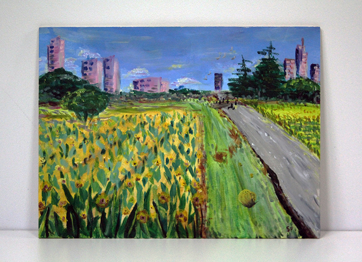

Home
About
Projects
Artwork
Contact
Central Experimental Farm
2020
Acrylic on Russian Birch

The result of my morning spent painting in the sunflower fields of the Central Experimental Farm near my house.